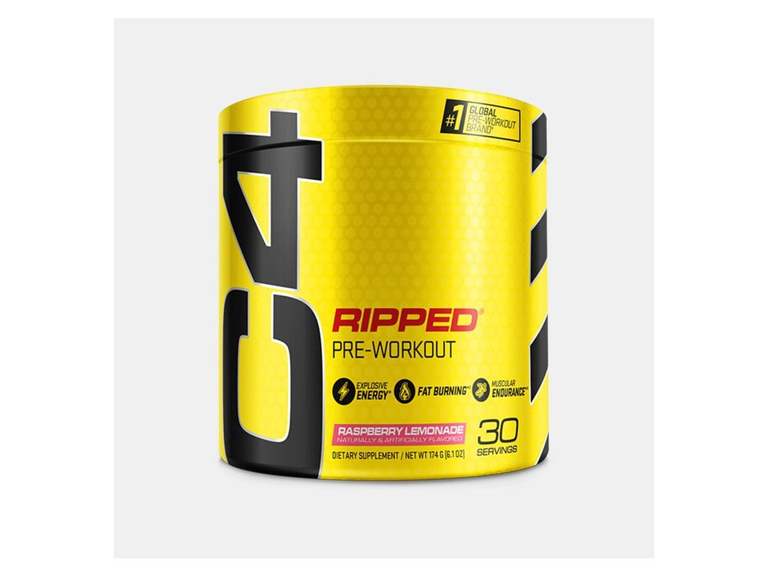

Product imagery supplied by the retailer. Packaging may vary — verify the Supplement Facts panel on the container you receive.
Cellucor
C4 Ripped
Our analysis — editorial take, not from the label
Named blends run through the whole C4 line, but this is the one that does not break them open: Original and Sport print an amount beside each ingredient inside their matrices, while Ripped's 1 g thermogenic blend and 371 mg energy blend disclose only the caffeine. It is also the thinnest of the C4s on this site — 150 mg caffeine, 1.6 g beta-alanine, 1 g arginine AKG, no citrulline and no creatine, which Cellucor removed on purpose for a cutting formula.
- Caffeine
- 150 mg
- Citrulline
- —
- Beta-alanine
- 1.6 g
- Servings
- 30
Price tier: Mid-range · relative cost per full serving across this database
We don't list dollar prices — they change daily and go stale. Check the live price instead:
View current price at Amazon Compare all 51 pre-workoutsScoop Sense doesn't collect user reviews and won't invent them. Read customer reviews on Amazon
Affiliate links — Scoop Sense may earn a commission at no additional cost to you.
Four core flavors (Icy Blue Razz, Cherry Limeade, Fruit Punch, Raspberry Lemonade); naturally and artificially flavored, sugar-free, sweetened with sucralose and acesulfame potassium and dyed with FD&C colors.
Label verified: September 2026 · View label source
Label data
Per full serving · 30 servings per container · from the manufacturer's panel
| Caffeine | 150 mg |
|---|---|
| Beta-Alanine | 1.6 g |
| L-Arginine (as Arginine Alpha-Ketoglutarate) | 1 g |
| C4 Ripped Blend | 1 g total |
| Proprietary blend | Yes |
Primary label source: Cellucor — official product page (150 mg caffeine, 30 servings, CarnoSyn beta-alanine, Capsimax) · verified September 2026
Cautions
- Two proprietary blends: only the 150 mg of caffeine is broken out, so the L-carnitine, green coffee, Capsimax cayenne, Coleus, tyrosine and velvet bean amounts are undisclosed
- Beta-alanine tingles (harmless skin prickling) are possible at 1.6 g
- Carries megadose B vitamins — 35 mcg of B12 is 1,458% of the Daily Value and niacin is 188% — on top of anything else you take
Formulated for healthy adults — not intended for anyone under 18. Full health & safety notes
Product details
Where this label sits
Cellucor C4 Ripped sits in the moderate stim tier of the Scoop Sense pre-workout database, which spans 0–400 mg of caffeine per serving. The label uses at least one proprietary blend, so a blend total stands in place of the individual amounts inside it. It runs 30 servings per container at the full labeled serving. Everything on this page comes from the manufacturer's supplement facts panel as of September 2026 — never from the marketing page.
Key ingredients & studied doses
- Beta-Alanine · 1.6 g. Half the 3.2 g/day used in most beta-alanine research, though the ingredient works off cumulative daily intake over weeks rather than any single serving.
- Caffeine Anhydrous · 150 mg. Broken out by name inside the 371 mg Explosive Energy Blend; a modest dose, roughly a strong cup of coffee, and the lowest of Cellucor's C4 powders.
- L-Arginine (as Arginine Alpha-Ketoglutarate) · 1 g. Well under the amounts used in arginine blood-flow research, and arginine is absorbed less efficiently than the citrulline most pump formulas now use — there is no citrulline on this label at all.
- C4 Ripped Blend · 1 g total. L-carnitine tartrate, green coffee bean extract, Capsimax cayenne and Coleus forskohlii share a single 1 g figure, so no individual amount can be compared to any published dose.
Flavors & sweetener
Four core flavors (Icy Blue Razz, Cherry Limeade, Fruit Punch, Raspberry Lemonade); naturally and artificially flavored, sugar-free, sweetened with sucralose and acesulfame potassium and dyed with FD&C colors.
Who it's best for
Most regular gym-goers — the caffeine dose is in the range of about two cups of coffee. Skip it if you want every individual dose disclosed on the label. Derived from the label figures above — not medical advice.
How we log this label
Every entry is built the same way: we read the current supplement facts panel, log each disclosed dose, compare it against the amounts used in published research, flag proprietary blends, and state the cautions plainly. The full methodology explains each step.
This label against the research
How we evaluate labelsEach bar shows the amount commonly used in published human research, and where this label's dose falls against it. Research amounts are context, not a recommendation — they are not doses, and nothing here is medical advice. The bars compare what the label states; we do not laboratory-test the product to confirm it.
-
Beta-alanine1.6 g
50% of the low end of the studied range0studied range 3.2 g–6.4 g7 g
Studied as a daily loading protocol of 3.2–6.4 g taken for four weeks or longer. A single serving below that range still counts toward the daily total, but one scoop is not a studied dose on its own.
Source: Rezende et al., Frontiers in Physiology 2020 — “It seems that substantial amounts of BA are required to increase MCarn, with most studies using doses of ~3.2–6.4 g·day−1, for periods ranging from 4 to 24 weeks.”
-
Caffeine150 mg
75% of the low end of the studied range0studied range 200 mg–400 mg450 mg
Performance studies most often use 3–6 mg per kg of body weight, which works out to roughly 200–400 mg for most adults. The FDA cites 400 mg a day as an amount not generally associated with negative effects in healthy adults.
Source: Guest et al., Journal of the International Society of Sports Nutrition 2021 — “Caffeine has consistently been shown to improve exercise performance when consumed in doses of 3–6 mg/kg body mass.”
-
L-arginine1 g
Plain L-arginine is poorly absorbed as an oral pump ingredient; citrulline raises blood arginine more reliably, which is why the research moved to it.
One or more amounts on this label sit inside a proprietary blend, so the individual doses behind the blend total cannot be compared at all.
Common questions about Cellucor C4 Ripped
How much caffeine is in Cellucor C4 Ripped?
150 mg per full labeled serving — roughly 1.6 small cups of coffee. Within the Scoop Sense pre-workout database (0–400 mg per serving) that places it in the moderate stim tier. The FDA cites about 400 mg per day as an amount generally not associated with negative effects in healthy adults, and coffee, tea, and energy drinks count toward the same total.
Why does Cellucor C4 Ripped make my skin tingle?
The 1.6 g of beta-alanine. The prickling (paresthesia) in the face, neck, and hands is generally considered harmless, is dose-dependent, and fades on its own — typically within about an hour. Most beta-alanine studies use 3.2 g per day.
What does the proprietary blend in Cellucor C4 Ripped hide?
The C4 Ripped Blend lists 1 g total as a combined total. A blend total tells you the sum of its ingredients, not the individual doses inside it — which is why blend entries can't be checked against studied amounts.